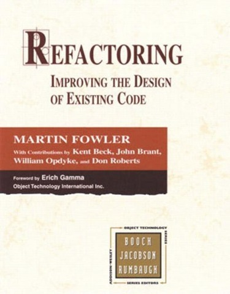
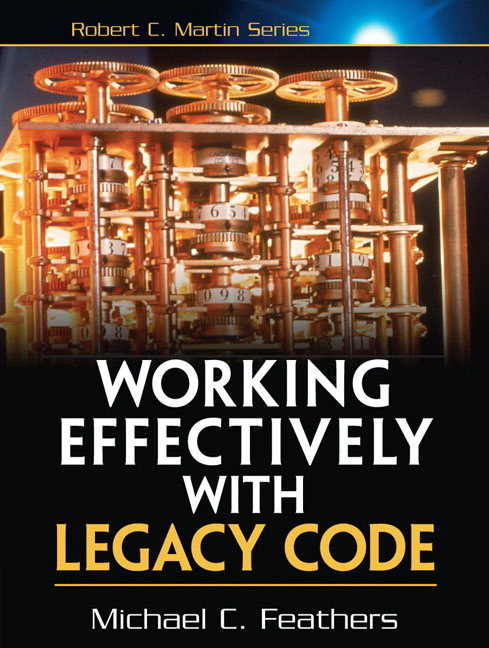

Created by Kevin Denver


Code refactoring is the process of restructuring existing computer code without changing its external behavior.
Improves the design of the code
Makes software easier to understand
Helps you find bugs
Helps you to program faster
When you add a function/feature
When you need to fix a bug
Whenever you see a code smell
When the existing code is such a mess that although you could refactor it, it would be easier to start from the beginning.
There's a fine line between comments that illuminate and comments that obscure. Are the comments necessary? Do they explain "why" and not "what"? Can you refactor the code so the comments aren't required? And remember, you're writing comments for people, not machines.
All other things being equal, a shorter method is easier to read, easier to understand, and easier to troubleshoot. Refactor long methods into smaller methods if you can.
The more parameters a method has, the more complex it is. Limit the number of parameters you need in a given method, or use an object to combine the parameters.
Duplicated code is the bane of software development. Stamp out duplication whenever possible. You should always be on the lookout for more subtle cases of near-duplication, too.
Watch out for large conditional logic blocks, particularly blocks that tend to grow larger or change significantly over time. Consider alternative object-oriented approaches such as decorator, strategy, or state.
You have lots of code that does almost the same thing.. but with tiny variations in data or behavior. This can be difficult to refactor-- perhaps using generics or an interpreter?
Large classes, like long methods, are difficult to read, understand, and troubleshoot. Does the class contain too many responsibilities? Can the large class be restructured or broken into smaller classes?
oes the name of the method succinctly describe what that method does? Could you read the method's name to another developer and have them explain to you what it does? If not, rename it or rewrite it.
Pick a set of standard terminology and stick to it throughout your methods. For example, if you have Open(), you should probably have Close().
Ruthlessly delete code that isn't being used. That's why we have source control systems!
Write code to solve today's problems, and worry about tomorrow's problems when they actually materialize. Everyone loses in the "what if.." school of design.
Avoid classes that passively store data. Classes should contain data and methods to operate on that data, too.
Methods that make extensive use of another class may belong in another class. Consider moving this method to the class it is so envious of.
Classes should pull their weight. Every additional class increases the complexity of a project. If you have a class that isn't doing enough to pay for itself, can it be collapsed or combined into another class?
Watch out for long sequences of method calls or temporary variables to get routine data. Intermediaries are dependencies in disguise.
If a class is delegating all its work, why does it exist? Cut out the middleman. Beware classes that are merely wrappers over other classes or existing functionality in the framework.
If a change in one class requires cascading changes in several related classes, consider refactoring so that the changes are limited to a single class.